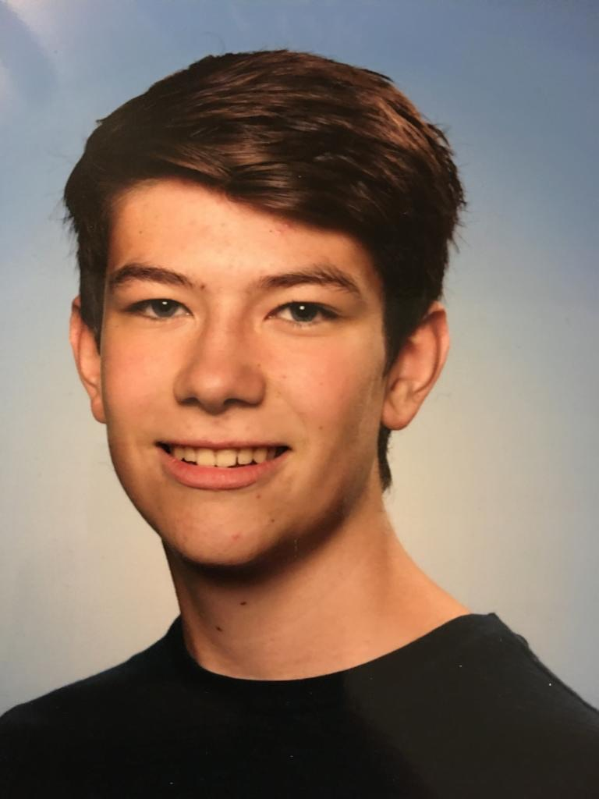

persoonlijke gegevens
Lars de Hond
Naam: Lars de Hond
leeftijd: 17 jaar
woonplaats: Lewedorp, sloestraat, 17
woonsituatie: ouders
vooropleiding & profiel: Havo met Nt profiel
Hobby's en vrije tijd
In mijn vrije tijd vind ik het leuk om aan brommers te sleutelen. Ik heb dan ook drie brommers. Twee Berini's en een Aprilia, deze kan je zien in de foto hier onder. verder ben ik in mijn vrije tijd bezig met computers en vind het dan ook wel eens leuk om een klein programmetje te maken.